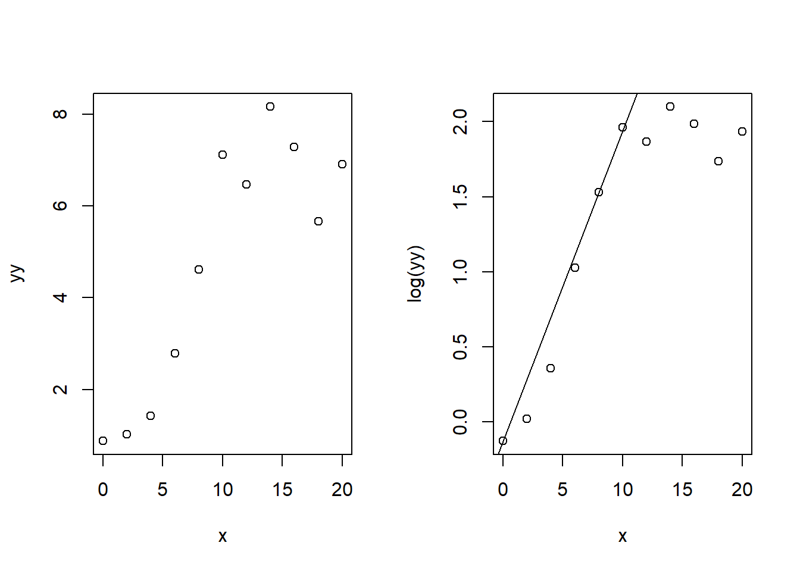
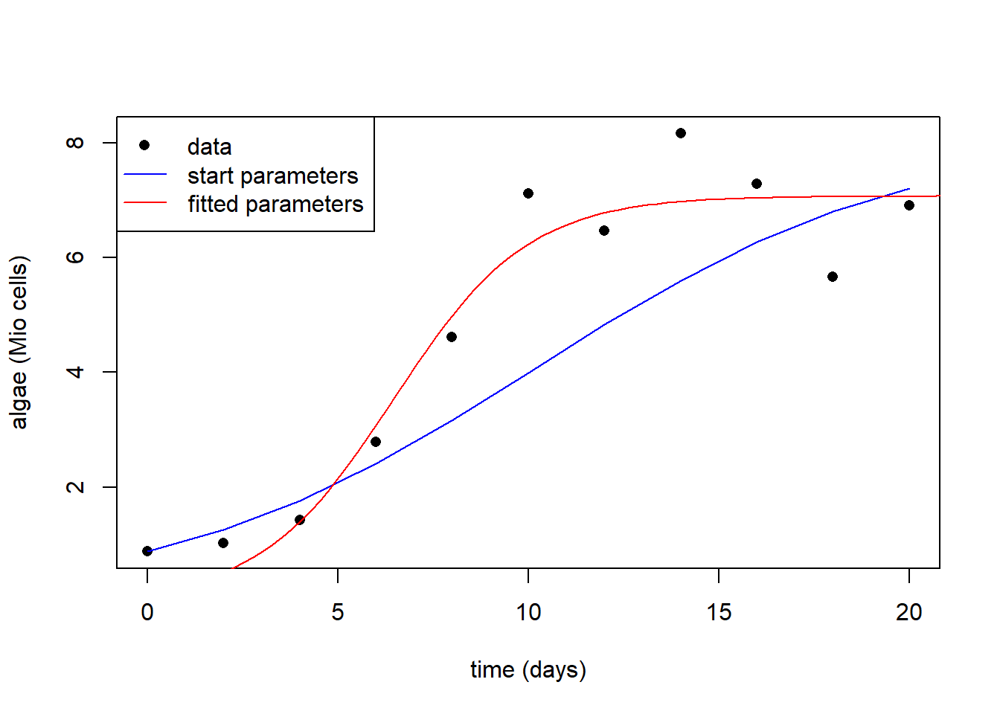
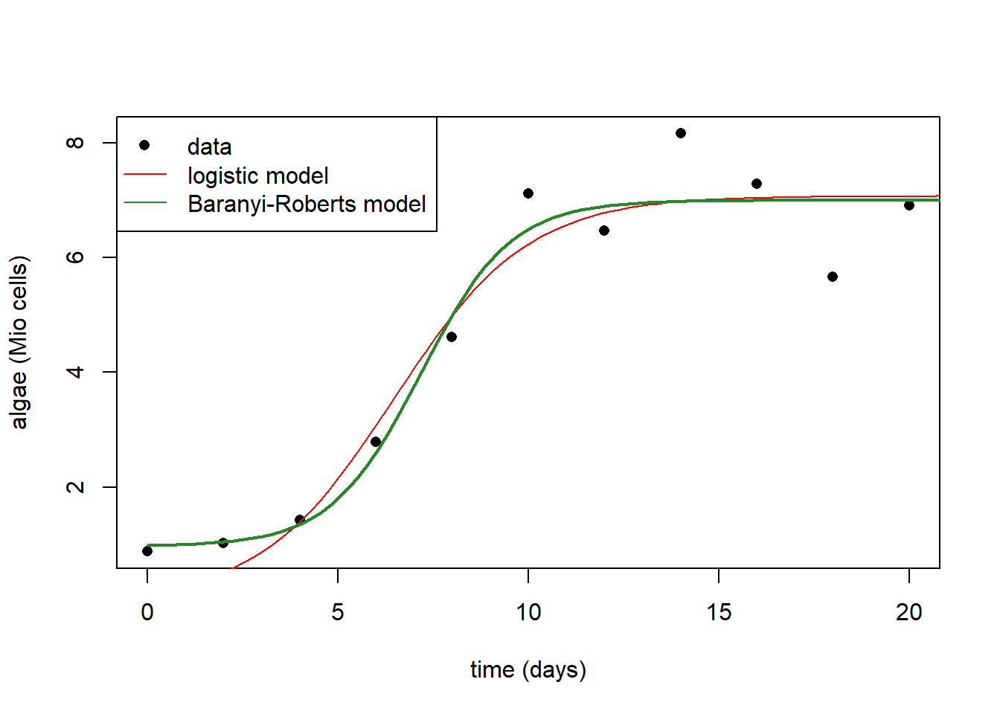
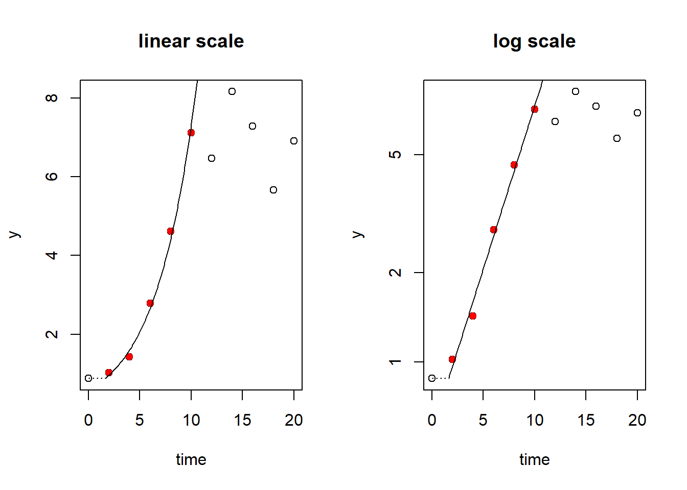
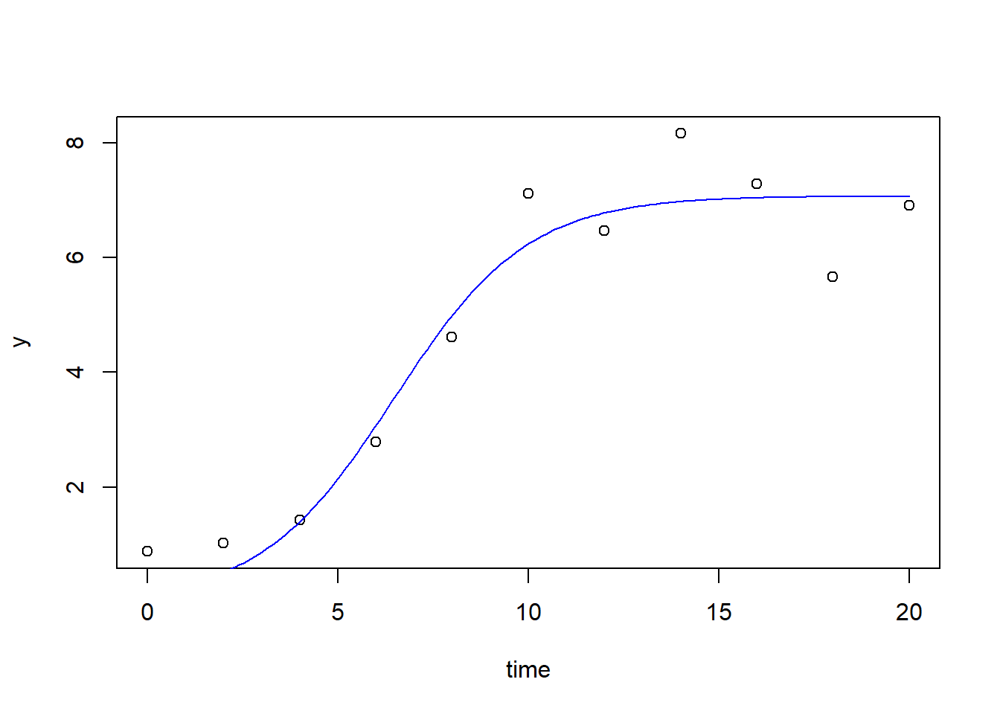
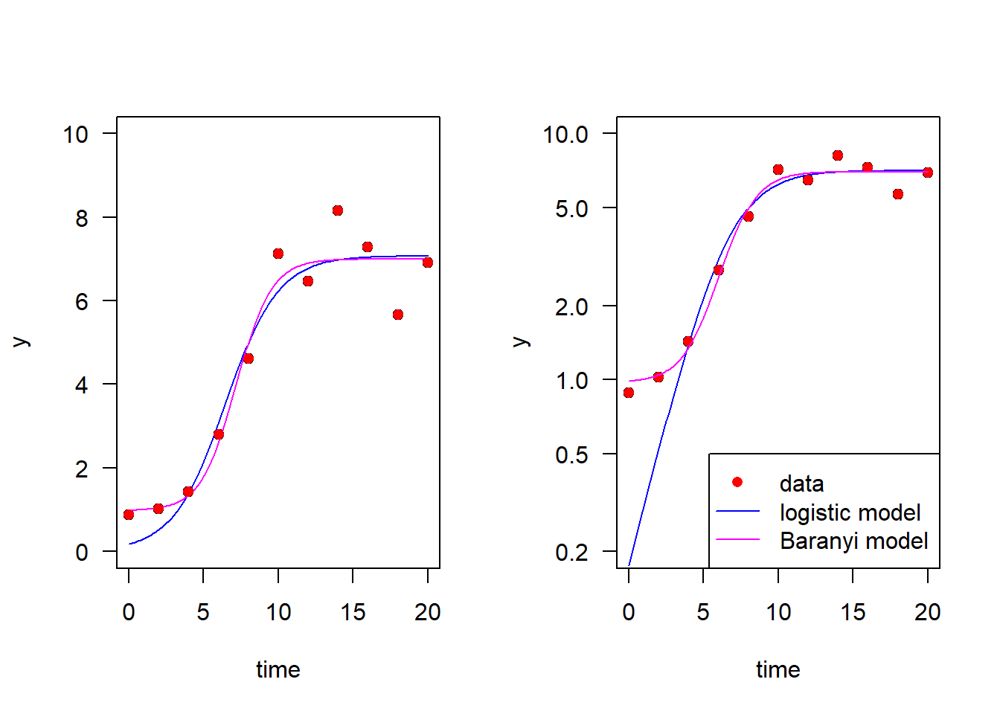

## time (t)
x <- c(0, 2, 4, 6, 8, 10, 12, 14, 16, 18, 20)
## Algae cell counts (per ml)
y <- c(0.88, 1.02, 1.43, 2.79, 4.61, 7.12,
6.47, 8.16, 7.28, 5.67, 6.91) * 1e6x10-Fit Nonlinear Models to Plankton Growth Data
1 Introduction
The growth rate of a population is a direct measure of fitness. Therefore, determination of growth rates is common in many disciplines of natural and human sciences, business and engineering: ecology, pharmacology, wastewater treatment, and economic growth. The following example gives a brief introduction, how growth models can be fitted wit R.
2 Material and methods
2.1 Data set
The example data set was taken from a growth experiment in a batch culture with Microcystis aeruginosa, a cyanobacteria (blue green algae) species. Details of the experiment can be found in Jähnichen et al. (2001).
2.2 Methods
Parametric models are fitted using nonlinear regression according to the method of least squares. Data analysis is performed using the R software of statistical computing and graphics (R Core Team, 2021) and the nls function from package stats. An additional analysis is performed with packages growthrates (Petzoldt, 2020) and FME (Soetaert & Petzoldt, 2010).
To get a suitable curve, we need a model that fits the data and that has identifiable parameters. In the following, we use the logistic growth model (Verhulst, 1838):
\[ N = \frac{K \cdot N_0}{(N_0 + (K - N_0) \cdot \exp(-r \cdot x))} \]
and the Baranyi-Roberts model (Baranyi & Roberts, 1994), explained later.
3 Results
After some first attempts (not shown) it turned out that convergence can be difficult and required good start values.
To improve stability of the convergence, the tolerances of the optimization algorithm should be adapted to the scale on the data. As an alternative, we can also re-scale the data to a more common range, for example between \(10^{-3}\) and \(10^3\). This is a rule of thumb, similar to what we usually do with measured quantities if we apply unit prefixes like micro, milli, kilo, mega:
yy <- y * 1e-6To get a first impression of the data and at the same time, obtain good start parameters for the logistic model, we plot the data in both, with linear and logarithmic y-axis.
We see that the first points show the steepest increase, so we can estimate a start value of the exponential growth rate \(r\) from the log-scaled data. The straight line between two data points with steep increase indicates the initial exponential phase. Here we use simply points number 1 and 5:
par(mfrow=c(1, 2))
plot(x, yy)
plot(x, log(yy))
r <- (log(yy[5]) - log(yy[1])) / (x[5] - x[1])
abline(a = log(yy[1]), b=r)
This way, we have a heuristics for all start parameters:
- \(r\): steepest increase of y in log scale
- \(K\): maximum value
- \(N_0\): initial population (first value)
3.1 Nonlinear regression with “nls”
3.1.1 Logistic Growth
We define now a used defined function for the logistic and this by plotting the function with the start values (blue line). Then we can use function nls (nonlinear least squares) to fit the model:
## function definition
f <- function(x, r, K, N0) {K /(1 + (K/N0 - 1) * exp(-r *x))}
## check of start values
plot(x, yy, pch=16, xlab="time (days)", ylab="algae (Mio cells)")
lines(x, f(x, r=r, K=max(yy), N0=yy[1]), col="blue")
## nonlinear regression
pstart <- c(r=r, K=max(yy), N0=yy[1])
fit_logistic <- nls(yy ~ f(x, r, K, N0), start = pstart, trace=FALSE)
x1 <- seq(0, 25, length = 100)
lines(x1, predict(fit_logistic, data.frame(x = x1)), col = "red")
legend("topleft",
legend = c("data", "start parameters", "fitted parameters"),
col = c("black", "blue", "red"),
lty = c(0, 1, 1),
pch = c(16, NA, NA))
summary(fit_logistic)
Formula: yy ~ f(x, r, K, N0)
Parameters:
Estimate Std. Error t value Pr(>|t|)
r 0.5682 0.1686 3.371 0.00978 **
K 7.0725 0.4033 17.535 1.14e-07 ***
N0 0.1757 0.1861 0.944 0.37271
---
Signif. codes: 0 '***' 0.001 '**' 0.01 '*' 0.05 '.' 0.1 ' ' 1
Residual standard error: 0.8118 on 8 degrees of freedom
Number of iterations to convergence: 14
Achieved convergence tolerance: 4.018e-06(Rsquared <- 1 - var(residuals(fit_logistic))/var(yy))[1] 0.931732We see that the fit converged and the red line approximates the data, but we can also see that the model fit is far below the data at the beginning. This will be improved in the next section.
3.1.2 Baranyi-Roberts model
The logistic function assumes, that growth starts exponentially from the beginning and then approaches more and more saturation. In reality, organisms need often some time to adapt to new conditions, and we can observe a delay at the beginnig. This delay is called lag-phase. Several models exist to describe such behavior, where the Baranyi-Roberts model (Baranyi & Roberts, 1994) is one of the most commonly used. Its parameters are similar to the logistic function with one additional parameter \(h_0\) for the lag. Following its mathematical equation (not shown here), we can implement it a suser-defined function in R:
baranyi <- function(x, r, K, N0, h0) {
A <- x + 1/r * log(exp(-r * x) + exp(-h0) - exp(-r * x - h0))
y <- exp(log(N0) + r * A - log(1 + (exp(r * A) - 1)/exp(log(K) - log(N0))))
y
}If we assume a lag time \(h_0 = 2\), we can try to fit it and compare it with the logistic model
pstart <- c(r=0.5, K=7, N0=1, h0=2)
fit_baranyi <- nls(yy ~ baranyi(x, r, K, N0, h0), start = pstart, trace=FALSE)
plot(x, yy, pch=16, xlab="time (days)", ylab="algae (Mio cells)")
lines(x1, predict(fit_logistic, data.frame(x = x1)), col = "red")
lines(x1, predict(fit_baranyi, data.frame(x = x1)), col = "forestgreen", lwd=2)
legend("topleft",
legend = c("data", "logistic model", "Baranyi-Roberts model"),
col = c("black", "red", "forestgreen"),
lty = c(0, 1, 1),
pch = c(16, NA, NA))
It is obvious, that it fits much better.
3.2 Growth curve fitting with R package “growthrates”
As growth curves are of fundamental importance in science and engineering, several R packages exist for this problem. Here we show one of these packages growthrates (Petzoldt, 2020). Details can be found in the package documentation.
3.2.1 Maximum growth rate as steepest increase in log scale
The package contains a method “easy linear” to find the steepest linear increase. It is a fully automatic method employing linear regression and a search routine. Details of the algorithm are found in Hall et al. (2014).
The following shows the phase of steepest increase, the exponential phase, identified by linear regression using the data points with the steepest increase:
library("growthrates")
par(mfrow=c(1, 2))
fit_easy <- fit_easylinear(x, yy)
plot(fit_easy, main="linear scale")
plot(fit_easy, log="y", main="log scale")
coef(fit_easy) y0 y0_lm mumax lag
0.8800000 0.5838576 0.2528382 1.6226381 3.2.2 Logistic growth
Now we can take the start parameters from above and function fit_growthmodel using the grow_logistic function, that is pre-defined in the package. We can also use a specific plot function from the package
pstart <- c(mumax=r, K=max(yy), y0=yy[1])
fit_logistic2 <- fit_growthmodel(grow_logistic, p=pstart, time=x, y=yy)
plot(fit_logistic2)
3.2.3 Baranyi-Roberts model
We see again that the model fits not very well at the beginning because of the lag phase. Therefore, we empoy again an extended model e.g. the Baranyi model.
A start value for the lag phase parameter \(h_0\) can be approximated from the “easylinear” method:
coef(fit_easy) y0 y0_lm mumax lag
0.8800000 0.5838576 0.2528382 1.6226381 h0 <- 0.25 * 1.66
pstart <- c(mumax=0.5, K=max(yy), y0=yy[1], h0=h0)
fit_baranyi2 <- fit_growthmodel(grow_baranyi, p=pstart, time=x, y=yy)
summary(fit_baranyi2)
Parameters:
Estimate Std. Error t value Pr(>|t|)
mumax 0.8477 0.3681 2.303 0.0547 .
K 6.9969 0.3499 19.999 1.96e-07 ***
y0 0.9851 0.5250 1.876 0.1027
h0 4.1220 3.0894 1.334 0.2239
---
Signif. codes: 0 '***' 0.001 '**' 0.01 '*' 0.05 '.' 0.1 ' ' 1
Residual standard error: 0.7583 on 7 degrees of freedom
Parameter correlation:
mumax K y0 h0
mumax 1.0000 -0.3607 0.4600 0.9635
K -0.3607 1.0000 -0.1030 -0.2959
y0 0.4600 -0.1030 1.0000 0.6477
h0 0.9635 -0.2959 0.6477 1.0000The summary shows the parameter estimates, their standard error and a significance level. However, we should not take the significance stars too seriously here. If we would, for example, omit the “nonsignificant” parameters y0 and h0, or set it to zero, the models would not work anymore. We see that some parameters correlate, especially h0 and y0. This can, in principle, indicate identification problems, but this dod not happen here, fortunatly.
Finally, we plot the results in both, linear and log scale:
par(mfrow=c(1, 2))
plot(fit_logistic2, ylim=c(0, 10), las=1)
lines(fit_baranyi2, col="magenta")
points(x, yy, pch=16, col="red")
## log scale
plot(fit_logistic2, log="y", ylim=c(0.2, 10), las=1)
points(x, yy, pch=16, col="red")
lines(fit_baranyi2, col="magenta")
legend("bottomright",
legend = c("data", "logistic model", "Baranyi model"),
col = c("red", "blue", "magenta"),
lty = c(0, 1, 1),
pch = c(16, NA, NA))
4 Discussion
We see clear differences between the model fits, both quantitatively and qualitatively. The four-parameter-Baranyi model fitted better than the logistic, especially at the beginning. This results from the lag phase of cell counts, that the logistic model cannot describe. We see this especially in the log-transformed plot. Whereas both functions have sigmoidal shape in the left (linear) plot, only the Baranyi function remains sigmoidally with log-transformed y axis (right plot, magenta). In contrast, growth is assumed to start exponentially in the logistic model, so that it starts approximately linear in the log scale (blue line, right).
5 References
Baranyi, J., & Roberts, T. A. (1994). A dynamic approach to predicting bacterial growth in food. International Journal of Food Microbiology, 23(3), 277–294. https://doi.org/10.1016/0168-1605(94)90157-0
Hall, B. G., Acar, H., Nandipati, A., & Barlow, M. (2014). Growth rates made easy. Mol. Biol. Evol., 31, 232–238. https://doi.org/10.1093/molbev/mst197
Jähnichen, S., Petzoldt, T., & Benndorf, J. (2001). Evidence for Control of microcystin dynamics in Bautzen Reservoir (Germany) by Cyanobacterial Population Growth Rates and Dissolved Inorganic Carbon. Archiv Für Hydrobiologie, 150, 177–196. https://doi.org/10.1127/archiv-hydrobiol/150/2001/177
Petzoldt, T. (2020). Growthrates: Estimate growth rates from experimental data. https://CRAN.R-project.org/package=growthrates
R Core Team. (2021). R: A language and environment for statistical computing. R Foundation for Statistical Computing. https://www.R-project.org/
Soetaert, K., & Petzoldt, T. (2010). Inverse modelling, sensitivity and monte carlo analysis in R using package FME. Journal of Statistical Software, 33(3), 1–28. https://doi.org/10.18637/jss.v033.i03
Verhulst, P. F. (1838). Notice sur la loi que la population suit dans son accroissement. Correspondence Mathématique et Physique, 10, 113–121.